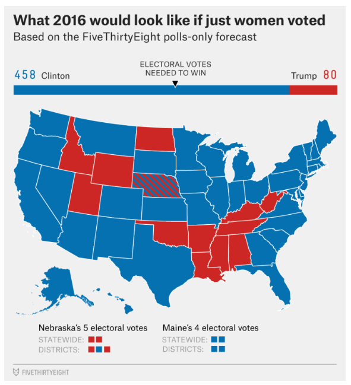
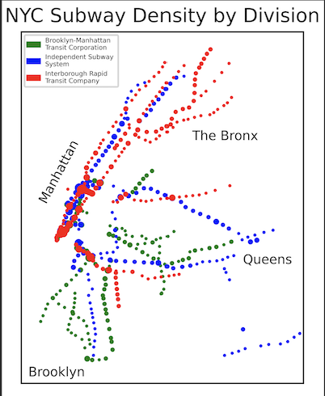

Marks
-
Mark 1 - Points
- Each state represents a point in our map of the US
-
Mark 2 - Line
- The bar above the map is a rectangle that represents 100% of the votes
Channels
-
Channel 1 - Color
- Represents Categorical Attribute, Red vs Blue states
- This is a good mapping because the audience is able to see which state voted for which political party, based off red being a Republican vote and blue being a Democratic vote. Further, we are able to see the scale at which Clinton would have won due to a wave of the color blue on our points (states).
-
Channel 2 - Length
- Represents sequentially ordered data (electoral votes)
- This is a good mapping because without needing to add up the electoral votes per political party, the audience can see a longer blue line and a significantly shorter red line, further emphasizing the scale at which the Clinton would have won.
Colormaps
-
Colormap 1 - Categorical
- Represents categorical attribute, state's political party
- This is a good mapping because distinct categories (party) are different colors. These colors also follow proper principal as they are perpetually distant and the same saturation.
Marks
-
Mark 1 - Points
- Each point represents a ball with a certain exit velocity and launch angle
Channels
-
Channel 1 - Horizontal and Vertical Position
- Launch Angle - Ordered cyclical data
- Exit Velocity - Ordered sequential data
- This is a good mapping because the audience can see the launch angles that different exit velocity balls have.
-
Channel 2 - Color
- Represents the divergent attribute of scoring value with the center being the average score
- This is a good mapping because the audience can see the score of different points, based on the color in the given gradient.
Colormaps
-
Colormap 1 - Divergent
- Represents the scoring value as a divergent attribute
- This is a good mapping because two colors (yellow and purple) are used to indicate extremes of a range. These colors also follow proper principal as there is a neutral color (white) in the middle. There is also no point in which there is a "no data" point, white on the visualization is a midpoint.
Marks
-
Mark 1 - Points
- Each point represents a station in the NYC Subway system
Channels
-
Channel 1 - Color
- Represents categorical attribute, type of train division (BMT, Independent, Interborough)
- This is a good mapping because the audience can see the distinction between different train divisions.
-
Channel 2 - Size
- Represents the sequential attribute of train line count (number of trains that go through a certain station)
- This is a good mapping because the audience can easily see the difference between large and small stations
Colormaps
-
Colormap 1 - Categorical
- Represents the different categories of train divisions
- This is a good mapping because distinct categories (train divisions) are different colors. These colors also follow proper principal as they are perpetually distant and the same saturation.